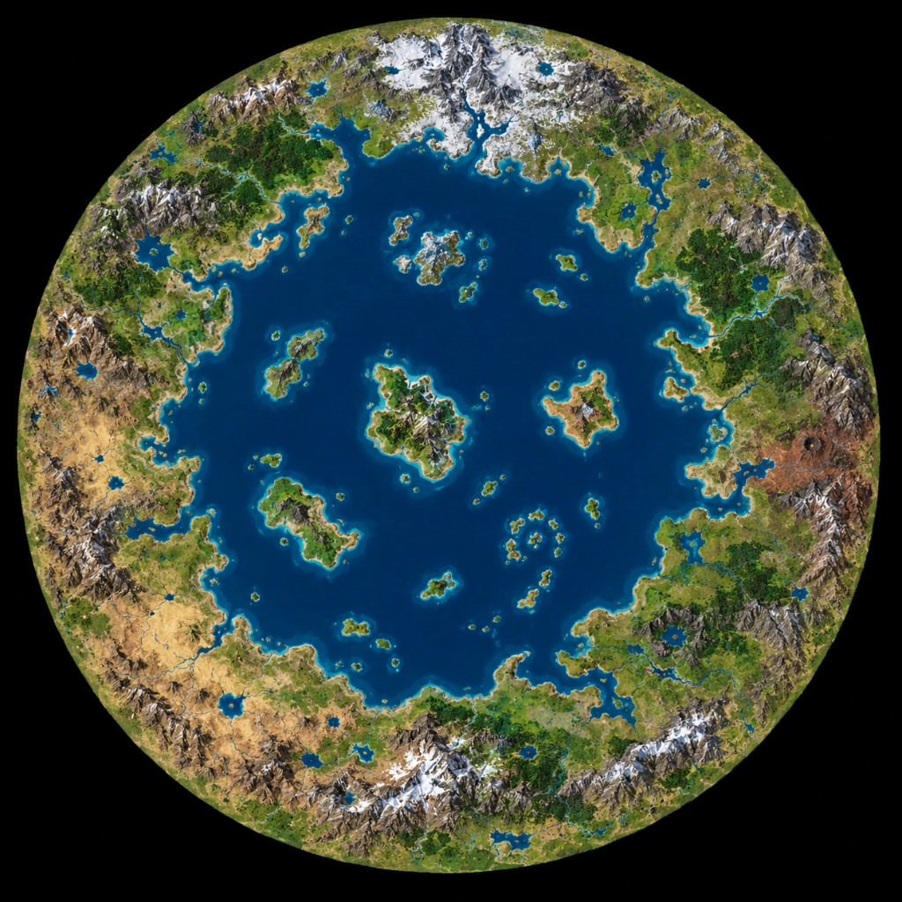

One Big World in Claiming Cosmos: one round world in the void. Harbor fleets own the central sea; Starports face the black outside.

They built a whole sky on one plate and left the rest of the night empty. Captains who sail the inner sea say the mountains walk in a circle. Captains who leave the rim say there is nothing to come back for.
The blue middle is lake water — Harbors, boats, and wet navy. The black outside is void — Starports and Voidships. Hold a stretch of the ring, then contest the islands. Rivers cut the continents; do not let someone walk your coast from the inside while you stare at the stars.
See also: Event Horizon · Four for War · play Claiming Cosmos free